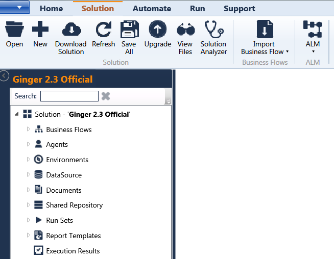

Solution tab
-
Solution - A Solution is a logical structure which is a complete automation package in itself that can be
loaded and executed in GINGER. The first step to start with GINGER is to create a Solution.

2) Business Flow- Business flow is the group of activities which define one or more end to end function flow/test
scenario. Example, for a Telecom application, a meaningful flow can be creating a new BAN.
3) Agent – Agents are the drivers which are used for recording and execution for the target application
under test. InternalBrowser is used for recording web application. This is in-built and
customized form of Internet Explorer. Selenium IE/Firefox/Chrome drivers enable us to run
scripts in these respective browsers. These Browsers are launched as separate browsers.
4) Environment – These can be used to store global details that will be used across multiple Business
flows present in a solution. It can be used to store Database connection details, Login
Credentials, Unix Server details or any general parameter one would want to be used across
globally.
5) Data Source – is the database that can be internally used for Ginger either the MS Access or Ginger
Data source can be used.
6) Documents – is a folder provided in the Ginger Solution folder where all the documents related to
the Solution can be stored. It can be Output File generated from
the flow, Scripts if any or Templates
7) Shared Repository – It is a centralized repository within Ginger for sharing Variables/Actions/Activities/Activity
Groups across all the Business flows present in the solution. Sharing ensures reusability of
the components. In GINGER the smallest unit of reusability is an Action.
8) Run Sets –is derived from the Run tab where Run sets are creating for running the business
Flows in a batch.
9) Report Templates – is the area where HTML report templates can be used to send the execution
status of the Run Set.
10) Execution Results – is the area where the results of the execution status of the Run Set is available.